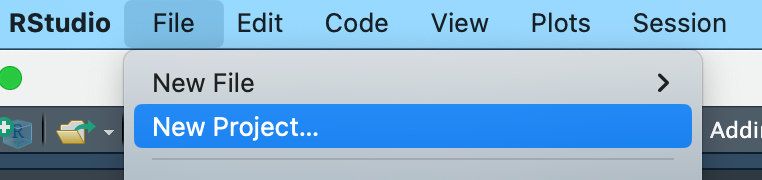
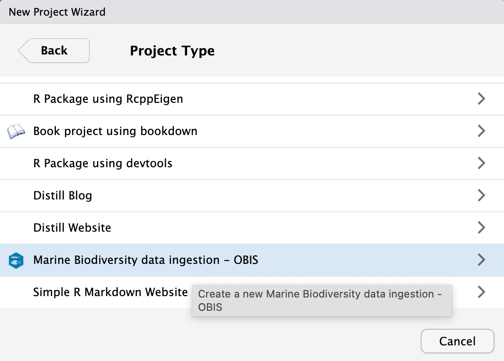
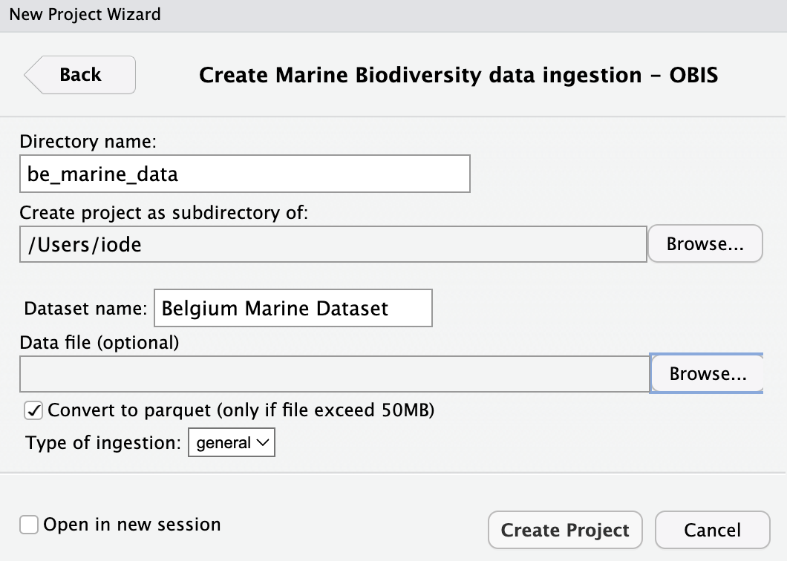
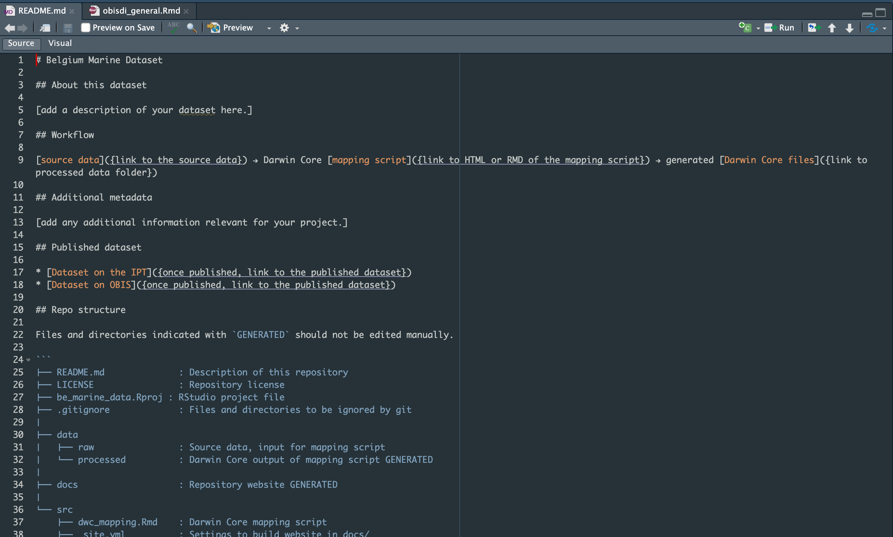

Marine biodiversity data ingestion for OBIS using a reproducible workflow
Overview
This package is still under development. To install it, use:
# install.packages("devtools")
devtools::install_github("iobis/obisdi")How to use
There are two main ways of using the obisdi package: by setting a new project through RStudio or by using one of the package functions:
By setting a new project
After you installed the package, you can set up a new project which will follow the standard of obisdi. In RStudio, go to “File > New Project”

Choose “New directory”

Then, select the Marine Biodiversity data ingestion - OBIS format

Supply the directory name (don’t use spaces or special characters!) and the dataset name.
You can also select your raw data files to be included in the project. For that use the “Data file” box. At this moment, the following formats are accepted:
-
zipfiles -
csvfiles
In case you supply a zip file it should be composed of only csv files. You can also convert the files with more than 50MB into lightweight parquet files by checking the box “Convert to parquet”. This conversion is strongly advised as GitHub does not allow big files to be uploaded (the limit is 100MB).
You may also skip this step and add your data manually on the “data/raw” folder. There is also a function in the package for pre-processing data (like converting to a lightweight format).

When the project is done, it will open a new session with the two main files of the project: the README.md and the Rmd file for data processing.

The folder is structured using the package standard and is ready to use

Using the function
You can set a new project folder using the function obisdi_create, supplying a path for the new folder.
obisdi_create(path = "be_marine_data",
dataset_name = "Belgium marine dataset")